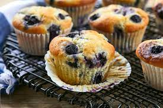

Blueberry Muffin

These blueberry muffins can add a little sweetness to your meal, or be the perfect desert
What you'll need
- 1/4 cup unsalted butter
- 1/2 cup and 2 tbsp white sugar
- 1/4 teaspoon salt
- 1 egg
- 1 cup all-purpose flour, divided
- 1 tsp baking powder
- 1/4 cup buttermilk
- 1 tbsp fresh blueberries (make sure to rinse, drain and dry!)
- 1 tbsp white sugar